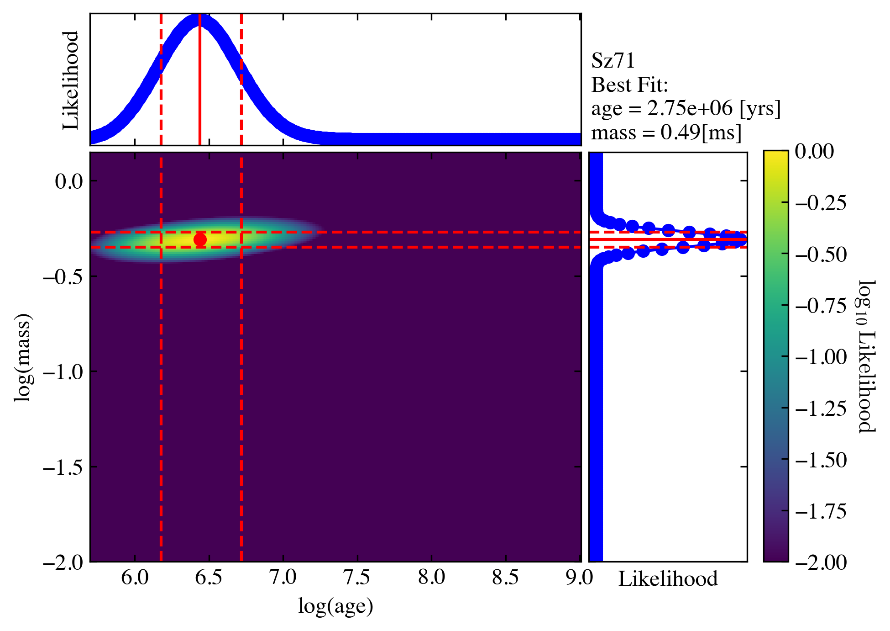
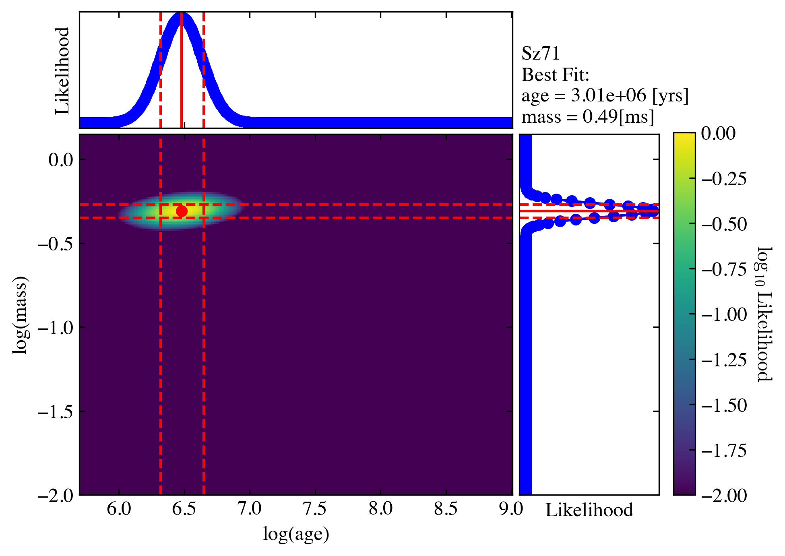
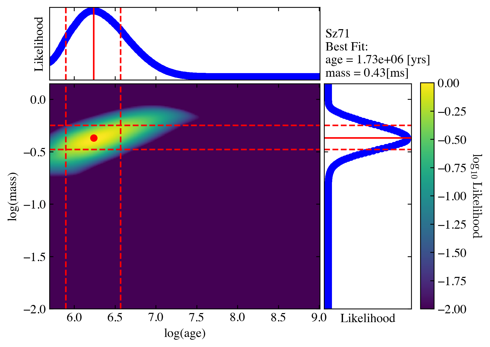

3. Applying Priors in the estimates¶
In this notebook, I demonstrate how the prior can be included in the Bayesian Framework.
This is used in the recent work by L. Zallio+2026.
Script below prepared by D. Deng and L. Zallio.
[ ]:
import os, sys
import numpy as np
import pandas as pd
import matplotlib.pyplot as plt
# if you do not want to install ysoisochrone to your system PATH
# you can also use the following script to temporarily add the package to your PATH
# """
# github_dir = '/Users/dingshandeng/github/ysoisochrone/'
# sys.path.append(os.path.join(github_dir))
# """
import ysoisochrone
[ ]:
# Set up a DataFrame in Python script
# For this target Sz71, values are from Alcala+2017,
# and corrected later with the Gaia DR3 distance in Manara+2023
df_prop = pd.DataFrame({
'Source': ['Sz71'],
'Teff[K]': np.array([3632.0]),
'e_Teff[K]': np.array([167.0]),
'Luminosity[Lsun]': np.array([0.327]),
'e_Luminosity[Lsun]': np.array([0.1420])
})
For the case assuming ages¶
[ ]:
# 1) No prior (flat in log-mass): same as before
ysoisochrone.bayesian.derive_stellar_mass_assuming_age(df_prop, assumed_age=1e6)
array([[-0.4 , -0.51, -0.31]])
[ ]:
# 2) Gaussian prior in log-mass (center 0.0 dex = 1 Msun, sigma 0.2 dex)
prior_mass = lambda logm: np.exp(-0.5*((logm - 0.0)/0.2)**2)
ysoisochrone.bayesian.derive_stellar_mass_assuming_age(df_prop, assumed_age=1e6, prior_mass=prior_mass)
array([[-0.32, -0.41, -0.24]])
For the case that I have the mass as prior¶
[ ]:
# 1) without any prior
best_logmass_output, best_logage_output, lmass_all, lage_all, flag_all =\
ysoisochrone.bayesian.derive_stellar_mass_age(
df_prop,
model='Baraffe_n_Feiden',
# model='Baraffe2015',
plot=True,
)
0%| | 0/1 [00:00<?, ?it/s]

100%|██████████| 1/1 [00:00<00:00, 1.79it/s]
[ ]:
# 2) A Gaussian Prior
# Gaussian prior in *linear* mass (Msun), μ = 0.5 Msun, σ = 0.1 Msun
mu_logm = np.log10(0.5) # log10(0.5 Msun)
sigma_logm = 0.1 / (np.log(10)) # ≈ 0.0434 dex for 10% at 1 Msun
prior_mass = lambda logm: np.exp(-0.5*((logm - mu_logm)/sigma_logm)**2)
# Pass this prior mass into the routine
best_logmass_output, best_logage_output, lmass_all, lage_all, flag_all =\
ysoisochrone.bayesian.derive_stellar_mass_age(
df_prop,
model='Baraffe_n_Feiden',
plot=True,
prior_mass=prior_mass)
0%| | 0/1 [00:00<?, ?it/s]

100%|██████████| 1/1 [00:00<00:00, 4.27it/s]
Other priors
for example, if the age prior is also used
[ ]:
# 3) together with age_prior, you can also only use age_prior
# Gaussian prior in *linear* mass (Msun), μ = 0.5 Msun, σ = 0.1 Msun
mu_logm = np.log10(0.5) # log10(0.5 Msun)
sigma_logm = 0.1 / (np.log(10)) # ≈ 0.0434 dex for 10% at 1 Msun
prior_mass = lambda logm: np.exp(-0.5*((logm - mu_logm)/sigma_logm)**2)
# Gaussian prior on log(age/yr) centered at 6.5 with σ=0.2 dex:
mu_logage = 6.5
sigma_logage = 0.2
prior_age = lambda logage: np.exp(-0.5*((logage - mu_logage)/sigma_logage)**2)
# Pass this prior mass into the routine
best_logmass_output, best_logage_output, lmass_all, lage_all, flag_all =\
ysoisochrone.bayesian.derive_stellar_mass_age(
df_prop,
model='Baraffe_n_Feiden',
plot=True,
prior_mass=prior_mass,
prior_age =prior_age)
0%| | 0/1 [00:00<?, ?it/s]

100%|██████████| 1/1 [00:00<00:00, 4.16it/s]
[ ]:
# 4) define a joint prior as a callable
# if you use this option, DO NOT use prior_age or prior_mass
# This is just an example for the fun_joint_prior
# it can be any function that you defined as long as it is
# a callable to (logage, logmass)
def func_joint_prior(logage, logmass):
# shapes like the meshgrid (Na, Nm)
mu_logm = np.log10(0.5) # log10(0.5 Msun)
sigma_logm = 0.1 / (np.log(10)) # ≈ 0.0434 dex for 10% at 1 Msun
# Gaussian prior on log(age/yr) centered at 6.5 with σ=0.2 dex:
mu_logage = 6.5
sigma_logage = 0.2
return np.exp(-0.5*((logmass-mu_logm)/sigma_logm)**2) * np.exp(-0.5*((logage-mu_logage)/sigma_logage)**2)
# Pass this prior mass into the routine
best_logmass_output, best_logage_output, lmass_all, lage_all, flag_all =\
ysoisochrone.bayesian.derive_stellar_mass_age(
df_prop,
model='Baraffe_n_Feiden',
plot=True,
prior_joint=func_joint_prior
)
0%| | 0/1 [00:00<?, ?it/s]

100%|██████████| 1/1 [00:00<00:00, 4.14it/s]
Test the function to add a 2D prior as an array¶
Here I demonstrate how the 2D prior can be used as an array
[ ]:
# Set up a DataFrame in Python script
# For this target Sz71, values are from Alcala+2017,
# and corrected later with the Gaia DR3 distance in Manara+2023
df_prop = pd.DataFrame({
'Source': ['Sz71'],
'Teff[K]': np.array([3632.0]),
'e_Teff[K]': np.array([167.0]),
'Luminosity[Lsun]': np.array([0.327]),
'e_Luminosity[Lsun]': np.array([0.1420])
})
[ ]:
# Call your Bayesian function without prior
best_logmass_output, best_logage_output, lmass_all, lage_all, flag_all = \
ysoisochrone.bayesian.derive_stellar_mass_age(
df_prop,
model='Baraffe_n_Feiden',
plot=True
)
0%| | 0/1 [00:00<?, ?it/s]

100%|██████████| 1/1 [00:00<00:00, 2.76it/s]
[ ]:
from scipy.interpolate import RegularGridInterpolator
# --- A New function to wrap as an interpolating callable the code can evaluate on its mesh ---
def build_prior_callable_from_tabulated_grid(
logage_grid, logmass_grid, pdf_grid,
fill_value=0.0, bounds_error=False, normalize='maxone'
):
"""
Wrap a tabulated 2D prior into an interpolating callable for the Bayesian engine.
Purpose:
Users may define a joint prior p(logAge, logMass) on their own (log10-age, log10-mass)
grids. This helper converts that tabulated 2D array into a callable
prior_joint(logage_mesh, logmass_mesh) that can be evaluated on the internal
isochrone mesh used by derive_stellar_mass_age().
Args:
logage_grid: [array-like]
1D monotonically increasing grid of log10(age/yr) where the prior is tabulated.
Shape: (Na_user,)
logmass_grid: [array-like]
1D monotonically increasing grid of log10(M/Msun) where the prior is tabulated.
Shape: (Nm_user,)
pdf_grid: [array-like]
2D array of prior values aligned with axes = (logage, logmass) using indexing='ij'.
That is, pdf_grid[i, j] corresponds to (logage_grid[i], logmass_grid[j]).
Shape: (Na_user, Nm_user).
Values should be non-negative. Absolute normalization is optional and can be
controlled via the `normalize` argument and/or downstream normalization.
fill_value: [float, optional] Default: 0.0
Value returned when evaluating outside the tabulated domain if bounds_error=False.
Use 0.0 to set prior=0 out of bounds (recommended).
bounds_error: [bool, optional] Default: False
If True, raise an error when evaluation points fall outside the tabulated grid.
If False, use `fill_value` for out-of-bounds points.
normalize: [str, optional] Default: 'maxone'
Optional pre-interpolation normalization of `pdf_grid` for numerical stability.
Choices:
- 'sum1' : scale so the discrete sum over the user grid equals 1
- 'maxone': scale so the maximum value equals 1
- 'none' : no renormalization (use values as provided)
Returns:
prior_joint: [callable]
A function with signature:
prior_joint(logage_mesh, logmass_mesh) -> 2D ndarray
where `logage_mesh` and `logmass_mesh` are meshgrids (same shape) of log10(age/yr)
and log10(M/Msun), typically produced inside derive_stellar_mass_age().
The returned array matches the input mesh shape and is clipped to be non-negative.
"""
logage_grid = np.asarray(logage_grid, float)
logmass_grid = np.asarray(logmass_grid, float)
pdf_grid = np.asarray(pdf_grid, float)
if pdf_grid.shape != (logage_grid.size, logmass_grid.size):
raise ValueError(
f"pdf_grid shape {pdf_grid.shape} != {(logage_grid.size, logmass_grid.size)}"
)
# Optional extra normalization for stability before interpolation
if normalize == 'sum1':
s = pdf_grid.sum()
if s > 0: pdf_grid = pdf_grid / s
elif normalize == 'maxone':
m = pdf_grid.max()
if m > 0: pdf_grid = pdf_grid / m
interp = RegularGridInterpolator(
(logage_grid, logmass_grid),
pdf_grid,
bounds_error=bounds_error,
fill_value=fill_value,
method='linear'
)
def prior_joint(logage_mesh, logmass_mesh):
pts = np.column_stack([logage_mesh.ravel(), logmass_mesh.ravel()])
vals = interp(pts).reshape(logage_mesh.shape)
return np.clip(vals, 0.0, np.inf) # guard tiny negatives at edges
return prior_joint
[ ]:
"""code demo"""
# create a 2D gaussian as a demo 2D array
def gaussian2d_on_grid_demo(
logage_grid, logmass_grid,
mu_logage, mu_logmass,
sigma_logage, sigma_logmass,
rho=0.0, # correlation
normalize='sum1' # 'sum1' | 'maxone' | 'none'
):
logage_grid = np.asarray(logage_grid, float)
logmass_grid = np.asarray(logmass_grid, float)
A, M = np.meshgrid(logage_grid, logmass_grid, indexing='ij') # (Na, Nm)
dx = (A - mu_logage) / sigma_logage
dy = (M - mu_logmass) / sigma_logmass
denom = 2.0 * (1.0 - rho**2)
z = np.exp(-(dx**2 - 2.0*rho*dx*dy + dy**2) / denom) # unnormalized
if normalize.lower() == 'sum1':
s = z.sum()
if s > 0: z = z / s
elif normalize.lower() == 'maxone':
m = z.max()
if m > 0: z = z / m
return z # shape (Na, Nm), axes=(logage, logmass)
# Demo: define YOUR tabulated grid (log10 years, log10 Msun)
logage_user = np.linspace(5.5, 7.5, 121) # 0.3–31.6 Myr
logmass_user = np.linspace(np.log10(0.02), 0.5, 201) # 0.02–~3.16 Msun
# Center/widths of the Gaussian prior in log10 units
prior_2dpdf_user_demo = gaussian2d_on_grid_demo(
logage_grid=logage_user,
logmass_grid=logmass_user,
mu_logage=np.log10(3.0e6), # ~3.0 Myr
mu_logmass=np.log10(0.5),# 0.5 Msun
sigma_logage=0.20, # 0.20 dex
sigma_logmass=0.10, # 0.10 dex
rho=0.0,
normalize='sum1'
)
# A New function to wrap as an interpolating callable the code can evaluate on its mesh
prior_joint = build_prior_callable_from_tabulated_grid(
logage_grid=logage_user,
logmass_grid=logmass_user,
pdf_grid=prior_2dpdf_user_demo,
fill_value=0.0, # zero outside your tabulated domain
bounds_error=False,
normalize='maxone' # fine; your pipeline renormalizes later anyway
)
# Call your Bayesian function with the interpolating prior
best_logmass_output, best_logage_output, lmass_all, lage_all, flag_all = \
ysoisochrone.bayesian.derive_stellar_mass_age(
df_prop,
model='Baraffe_n_Feiden',
plot=True,
prior_joint=prior_joint # <<== key: pass the callable
)
0%| | 0/1 [00:00<?, ?it/s]
100%|██████████| 1/1 [00:00<00:00, 2.54it/s]